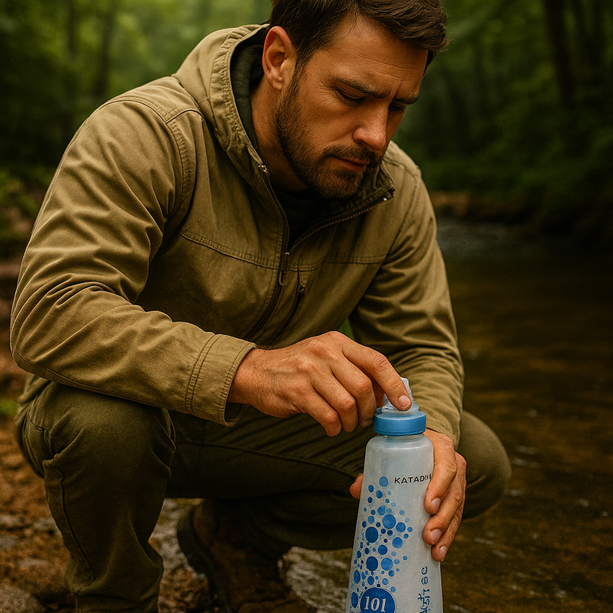

Kelty Late Start 2 Tent
Not flashy, but easy enough to trust again when the job is simple shelter that sets up cleanly.
 By Chris Follin
By Chris FollinGUIDE
This is the confidence list. If one of these disappeared tomorrow, I would not spend much time browsing, negotiating, or wondering if I should take the chance to "upgrade." I would mostly just replace it and keep going.
A lot of gear is fine once you already own it. That is not the same thing as being good enough to spend the money on again. This page is for the stuff that would still make sense even if I had to start over tomorrow with no sentimental attachment to it.
Not flashy, but easy enough to trust again when the job is simple shelter that sets up cleanly.

An easy rebuy because it cuts down on the exact kinds of stove annoyances I hate.

Fast, simple water treatment that makes a lot of trail and camp choices easier.

The kind of boring utility I would replace quickly because it makes every dry camp easier.

A useful camp light that solves table, cooking, and sorting problems every time the sun drops.

Heavy, yes, but good enough at its job that I would still do it again.

One of the rare expensive comfort pieces that can still pass the rebuy test.

The truck, belt, and camp-bin tool that keeps solving little problems before they grow.

Expensive until it is the only connection option; that is exactly why it clears the rebuy bar.
A lot of gear is fine once it is already sitting in your bin. The rebuy test is harder. It asks whether I would still hand over the money now that I know the annoyances, tradeoffs, and the exact way the item behaves in real use.
NO REGRET
That means it solved the problem cleanly enough that I am not still mentally negotiating with myself about whether it was worth it. The rebuy list is confidence, not just tolerance or sunk cost.
KNOWN TRADEOFFS
Some of these are heavy. Some are expensive. Some are not the coolest option in the category. They are here because the known tradeoffs still feel acceptable once real use has stripped the fantasy off.
MONEY TEST
If I had to spend the money today, I would put it back into these because they keep removing the right problems. That is a much stronger endorsement than "I still own it" or "it looked good when I bought it."
If one of these disappeared tomorrow, I would not start from scratch with a thousand tabs open. I would usually replace it quickly and spend the energy somewhere else.
IMMEDIATE REBUY
Tent, stove, lighting, water, safety, and repair pieces tend to earn the fastest replacement decisions because they solve recurring pain, not one-off edge cases.
WORTH REBUYING
Some comfort items still make the cut because they improve the trip enough to justify themselves. Convenience is real value when it keeps making trips happen.
NOT AUTOMATIC
If I would hesitate, compare too many alternatives, or look for an excuse to switch, it fails the test. This page is the shortlist that survives that hesitation.